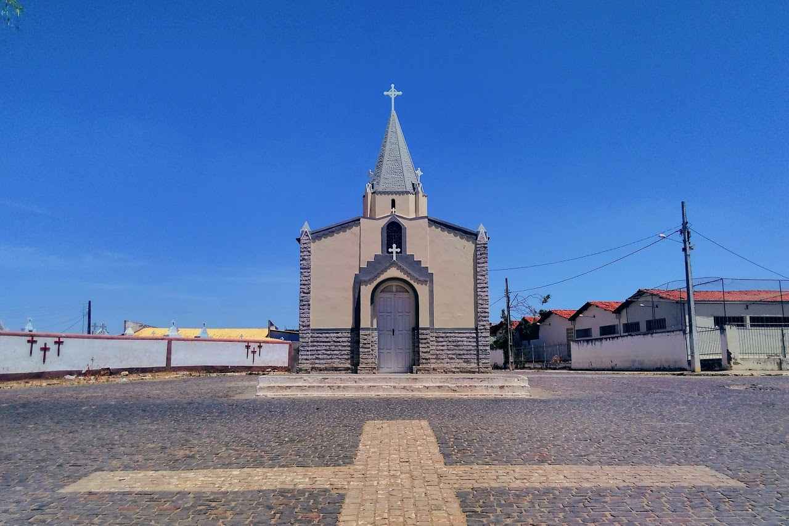

Poço Verde
História
Seu nome surgiu de uma fazenda que era assim identificada devido a um poço existente em seu interior, o qual mesmo em períodos de estiagem, mantinha a superfície esverdeada. Essa propriedade ficava à margem direita do Rio Real, na Bahia, integrando o patrimônio do português Garcia d'Ávila desde o século XVI, sendo comprada aos seus herdeiros por Sebastião da Fonseca Dória em 1839.
Instalado na localidade, o novo proprietário procurou a paróquia da vila de São João Batista de Jeremoabo a fim de pedir autorização para construir uma capela. Tal pedido, todavia, foi negado, o que lhe fez recorrer à paróquia da vila de Campos do Rio Real, em Sergipe, onde foi fundada a atual cidade de Tobias Barreto, a qual autorizou a construção no território por ela respondido.
Assim, em 1847, Sebastião da Fonseca Dória e sua esposa Maria do Espírito Santo compraram um terreno do outro lado do rio, onde construíram um cemitério com uma capela em seu interior, erguendo dentro desta uma imagem da Santa Cruz. A partir disso, outras construções começaram a ser feitas nas proximidades, dando início a um povoado, que mesmo em território sergipano, foi sendo identificado como Poço Verde em alusão à fazenda que lhe dera origem e que servia de referência por quem por ali passasse.
Em 1923, Poço Verde passou a ser distrito, sendo elevado à categoria de vila em 1938, com o Decreto-Lei Federal 311. E no dia 25 de novembro de 1953, por meio da Lei Estadual 525-A, adquiriu emancipação política, desmembrando-se de Tobias Barreto e se tornando o município de Poço Verde.
fonte: https://pt.wikipedia.org/wiki/Po%C3%A7o_VerdePontos Turísticos
Praça da Juventude
O poço-verdense conta com um lugar bem arejado e funcional para o uso de práticas esportivas além de dar amplitude na inclusão de outros esportes durante os jogos internos das escolas da região sem a desculpa de que não há local pra realizar os jogos tendo então uma área diversificada como a recém-inaugurada Praça da Juventude: ou ainda durante os Jogos Escolares, cuja realização em parceria com a SMEducação
Paróquia São Sebastião
Paróquia construida em homenagem a São Sebastião que foi um mártir dos primeiros séculos da igreja cristã, por professar e não renegar sua fé em Cristo.
Dados Gerais de acordo com o IBGE
| Prefeito (a) | Everaldo Iggor Santana de Oliveira |
| Vice-Prefeito (a) | Euberlan de Dona Elza |
| Site do município | https://pocoverde.se.gov.br/ |
| Área territorial | 441,326 km² |
| População estimada | 24.003 pessoas |
| Densidade demográfica | 54,4 hab./km² |
| IDHM | 0,561 |
| PIB per capita | R$ 4.329,98 |